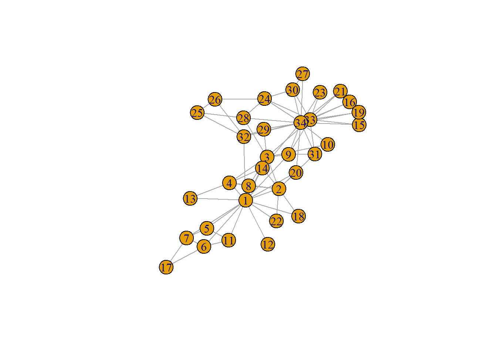

2 Basic network analysis in R
In this tutorial we’ll use the igraph package to do some basic descriptive social network analysis. Obviously, we can only scratch the surface here, and many research project will require different analyses. Also, we do not cover visualization specifically.
As an example network, we’ll use the famous “karate club” data studied by Zachary (1977), included with igraph.
## IGRAPH 1b67821 U--- 34 78 -- Zachary
## + attr: name (g/c)
## + edges from 1b67821:
## [1] 1-- 2 1-- 3 1-- 4 1-- 5 1-- 6 1-- 7 1-- 8 1-- 9 1--11 1--12
## [11] 1--13 1--14 1--18 1--20 1--22 1--32 2-- 3 2-- 4 2-- 8 2--14
## [21] 2--18 2--20 2--22 2--31 3-- 4 3-- 8 3--28 3--29 3--33 3--10
## [31] 3-- 9 3--14 4-- 8 4--13 4--14 5-- 7 5--11 6-- 7 6--11 6--17
## [41] 7--17 9--31 9--33 9--34 10--34 14--34 15--33 15--34 16--33 16--34
## [51] 19--33 19--34 20--34 21--33 21--34 23--33 23--34 24--26 24--28 24--33
## [61] 24--34 24--30 25--26 25--28 25--32 26--32 27--30 27--34 28--34 29--32
## [71] 29--34 30--33 30--34 31--33 31--34 32--33 32--34 33--34
This looks like an undirected network, which we can verify using:
## [1] FALSE2.1 Network level: a “five number summary”
A good starting point of any network analysis project is to look at some basic properties of the graph as a whole. While there are many potentially interesting properties, we’ll focus here on the the “five number summary” as suggested by Luke (2015).
2.1.1 Size
Probably the most basic property of a network is its size, that is, the number of vertices and the number of edges (of course these are actually already two numbers, but well..). While igraph already reported them above (if you knew where to look), we can ask for these numbers specifically:
## [1] 34## [1] 782.1.2 Density
The density of a network is the ratio of existing edges and the maximum possible number of edges that could exist, given the number of vertices. We can let R calculate it for us:
## [1] 0.1390374Obviously, we could already have calculated this ourselves, given that we already knew the number of edges and the number of vertices.
QUESTION: How would you calculate density using ecount() and vcount()?
If desired, we can also add such network-level results to the network object, for later use:
## IGRAPH 1b67821 U--- 34 78 -- Zachary
## + attr: name (g/c), density (g/n)
## + edges from 1b67821:
## [1] 1-- 2 1-- 3 1-- 4 1-- 5 1-- 6 1-- 7 1-- 8 1-- 9 1--11 1--12
## [11] 1--13 1--14 1--18 1--20 1--22 1--32 2-- 3 2-- 4 2-- 8 2--14
## [21] 2--18 2--20 2--22 2--31 3-- 4 3-- 8 3--28 3--29 3--33 3--10
## [31] 3-- 9 3--14 4-- 8 4--13 4--14 5-- 7 5--11 6-- 7 6--11 6--17
## [41] 7--17 9--31 9--33 9--34 10--34 14--34 15--33 15--34 16--33 16--34
## [51] 19--33 19--34 20--34 21--33 21--34 23--33 23--34 24--26 24--28 24--33
## [61] 24--34 24--30 25--26 25--28 25--32 26--32 27--30 27--34 28--34 29--32
## [71] 29--34 30--33 30--34 31--33 31--34 32--33 32--34 33--34‘Density’ is now listed as one of the attributes of the object, where ‘g/n’ indicates that it is a graph-level attribute.
2.1.3 Components
The number of components is the number of unconnected parts of the network (which may be parts consisting of one node, that is, isolates). The number of components in this network is, quite trivially, just one, but the way to get it is:
## [1] 12.1.4 Diameter (and distances)
The diameter of a network is the “longest shortest path” in the network
## [1] 5A related an much-studied property is the average shortest path length, that is, the average of all the shortest path over all pairs of vertices in the network. For example, this is the key indicator in the “small world phenomenon”.
## [1] 2.40822.1.5 Clustering Coefficient
Clustering, or transitivity, relates to the extent to which triangles tend to be closed in the network, or put differently, to what extent neighbors of nodes tend to be connected themselves. There are many ways to quantify this tendency (which also differ for directed an undirected networks), and the transitivity() function covers many of them. Note that in the literature and elsewhere in the field, terms like ‘transitivity’ and ‘clustering’ are often used quite loosely, so it is always wise to look closely at the formal specifications (if provided) to know what is meant in a specific use case.
We here compute what is most commonly known as the ‘clustering coefficient’. This computes, for each vertex, the proportion of the potential ties between the vertex’ neighbors that actually exist (in the ego networks literature, this is referred to as local density), and averages this over all vertices.
## [1] 0.5879306Interestingly, the specification of ‘average’ for the ‘type’ parameter is not explained in the igraph documentation, but this is what it does.
2.2 Individual level: centrality
Moving to the individual (that is, node-level) measures, we concentrate here on centrality measures. Obviously, there are many other measures related to individual network position that may be relevant (and are included in igraph, see the reference manual).
2.2.1 Degree centrality
The most straightforward measure of centrality is degree centrality, or simply the number of connections per node. We obtain it using the degree() function from igraph:
## [1] 16 9 10 6 3 4 4 4 5 2 3 1 2 5 2 2 2 2 2 3 2 2 2 5 3
## [26] 3 2 4 3 4 4 6 12 17Because degree is an individual-level property, the result from the function is no longer a single number as before, but a vector of numbers, one for each node. Of course we can use this vector for further calculations:
## Min. 1st Qu. Median Mean 3rd Qu. Max.
## 1.000 2.000 3.000 4.588 5.000 17.000(Note that there are of course much nicer and better ways to analyze and visualize distributions like this, but that is not the point of this tutorial.)
In many other cases, we’d want to keep the individual-level results on centrality and add them to the network object for later use:
We may, for example, want to use it in a plot:
#We add + 8 to degree to avoid that the lowest-degree nodes become really small and specify margin = -0.1 to reduce the whitespace around the plot
plot(z, vertex.size = V(z)$degree+8, margin= -0.1)Finally, if you run ?degree() on your console, you’ll note that the function has a number of other useful options. For example, we can also extract the degree of a specific vertex:
## [1] 10Furthermore, for directed networks, you can also specify whether you want indegree, outdegree, or the total degree (but that does not apply to our undirected example network).
2.2.2 Betweenness centrality
A fancier centrality measure is betweenness centrality, which relies on the shortest paths between all pairs of vertices to assess to what extent nodes sit on shortest paths between other nodes.
## [1] 231.0714286 28.4785714 75.8507937 6.2880952 0.3333333 15.8333333
## [7] 15.8333333 0.0000000 29.5293651 0.4476190 0.3333333 0.0000000
## [13] 0.0000000 24.2158730 0.0000000 0.0000000 0.0000000 0.0000000
## [19] 0.0000000 17.1468254 0.0000000 0.0000000 0.0000000 9.3000000
## [25] 1.1666667 2.0277778 0.0000000 11.7920635 0.9476190 1.5428571
## [31] 7.6095238 73.0095238 76.6904762 160.5515873We again add it to the network object. This time, we use set_vertex_attr() rather than V() just to demonstrate that this may work better in a “pipeline” workflow: